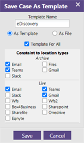
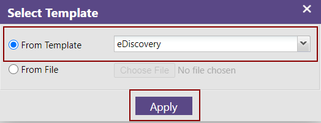
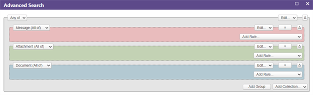
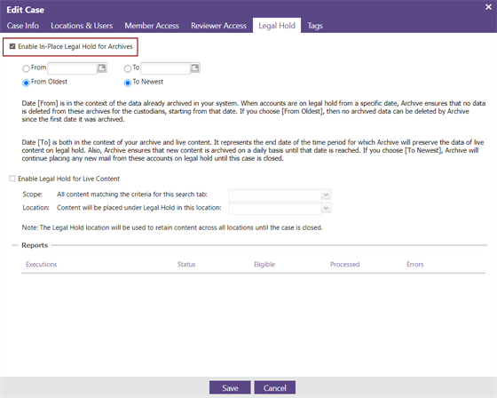
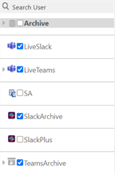
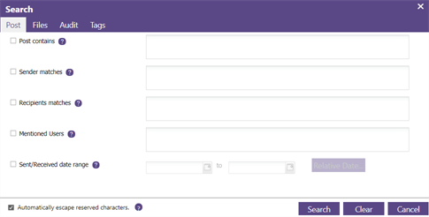
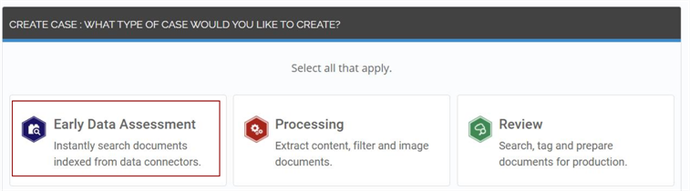

continues to evolve with this exciting release that contains new features as well as a myriad of other enhancements in information governance.
Note 1: 2020.8.0 requires SQL Server 2016 or later, .NET Core 3.1 or later, and .NET Framework 4.8 or later. In addition, the updated version of Auth is required for this release.
Note 2: Using Single Sign-on (SSO) requires enabling TLS 1.2 with an outbound HTTP connection to the identity provider. For more information about SSO and TLS, see the Security section that follows.
For more overall information, see the System Requirements document.
Note 3: Eclipse web has been removed and replaced with our new, modern document review interface. See Resolved Issues in this document for more information.
To view the 2020.8.0 new features video, click
here.
New Features
Audit Templates
In Search, Audit Managers can save audits to be used as templates. This can save time when the Audit Manager must create several audits. An Audit Manager can import search criteria, tabs, custom tags, and other parameters, and save a template for any other Audit Manager to us. See Create an Audit Template.


Search Templates
In Search, you can save the search criteria in a search tab as a template. This can simplify things if you are required to replicate the search in another tab or in another audit. You can also make your search template accessible for others to use in their own searches. See Create a Search Template.
File Archiving
In , you can archive numerous file types in various online and offline repositories, including Microsoft OneDrive and SharePoint, and proprietary file systems for strict Retention Compliance. Select which versions of the archived files to search and export. File Archiving complements ’s existing file crawling capabilities for in-place eDiscovery. See Configure File Archive Jobs.
In the File Archiving configuration, you can access directly the new Advanced Search query builder that was introduced in 6.4.2 See Advanced Search.

Legal Hold for Live Content
This feature places live email, file, Teams, SharePoint or Slack content—that has not been archived yet—on Legal Hold. In , Legal Hold is a way of preserving the data to create an immutable record. Regulations or court proceedings might require you to show chain of custody, that records are intact, and that there has been no spoliation. This feature complements ’s existing Legal Hold capabilities for archived email. See Applying Legal Hold.

Indexing and Archiving for Teams, Slack and Gmail
In Search, the IM Index feature is used to index messages, posts, files, and reactions in Teams and Slack. You must perform this step in order to search live Teams and Slack content. See Configure IM Indexing.
Teams and Slack content can also be archived for compliance purposes and to search it. See Archiving for Teams and Slack.
For both indexing and archiving of Teams and Slack content, you must first set up related locations and perform UPN-based user mapping. See Configuring Storage Locations.
Use the IM (Instant Message) Search tab to search for messages, posts, files, reactions, and other content in Teams, Slack, and Gmail. See IM Search.


LIVE EDA
When you open a (Early Data Assessment) case in , you are directed to Search where you can perform searches on live content across multiple repositories—see Configure LIVE EDA.

Other Enhancements
Updates to Public APIs
Updates to Search
Ability to ignore User Mapping in Microsoft environments
UPN-based user selection
UPN-based custodian selection
Ability to include and exclude folders when indexing
Ability to search audit records
When items are deleted from Teams/Slack, index records are now also deleted
NQL-based policies
Ingestion Microservice Infrastructure allows for easier connection to various data sources
GraphAPI-based authorization allows for tenant-based access.
Location Type grouping by External or Local types
NIPE Error reporting improvements.
Upgrade to Solr 8.
Indexing Job split into Email Index and Archive Index
LocationID requirement removed from CSV map file, enabling the use of a single mapping across all data sources
Disabled the use of the same paths for different location types
More items in the UI can be customized
Legal Hold locations now support Dual Authorization